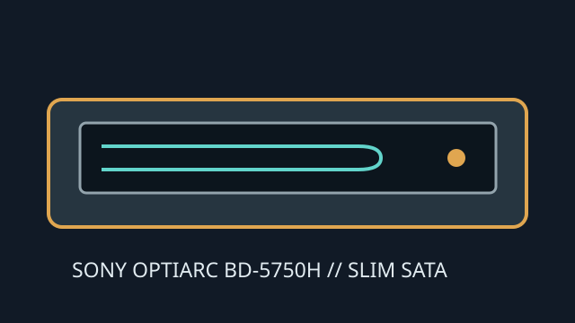

[ INTERNAL SLIMLINE BLU-RAY WRITER ]
Sony Optiarc BD-5750H
Slim internal SATA BD/DVD/CD writer for notebook systems. The slimline mounting and connector differ from desktop half-height drives; exact host caddy and bezel fit must be checked.

IDENTIFICATION: Sony Optiarc BD-5750H slimline drive; not an external USB product. BDXL-capable recording, where supported by the relevant variant, does not imply UHD playback.
Documented specifications
| Media read/write formats | Reads BD-ROM, BD-R/RE, DVD-ROM, DVD±R/RW, DVD±R DL and CD-ROM/R/RW. Writes BD-R/RE, DVD±R/RW, DVD±R DL, DVD-RAM and CD-R/RW. Published specifications identify BD-R TL/QL and BD-RE TL capability; check specific drive revision/media list. |
|---|---|
| Maximum speeds | BD-R/BD-R DL up to 6×; BD-R TL/QL up to 4×; BD-RE up to 2×; BD-ROM read up to 6× (BD-ROM DL up to 4×). DVD±R up to 8×; DVD+RW up to 8×, DVD-RW up to 6×; CD-R up to 24× and CD-RW up to 16×. |
| Interface and physical bay | Internal slimline 12.7-mm notebook optical drive with SATA interface, tray load and an OEM-dependent bezel/caddy. Confirm connector style, bay height, mounting tab, bezel shape and host chassis before installing. |
| Host and firmware compatibility | Requires a notebook SATA optical controller/caddy and OS support for an ATAPI drive. OEM systems may use vendor-specific firmware and bezel assemblies; only use firmware matched to the exact BD-5750H OEM unit. UHD playback is not claimed. |
Manual and technical sources
- Sony Optiarc BD-5750H manualModel-specific user manual and operating guidance.
- Sony Optiarc BD-5750H datasheetDrive technical sheet for formats, slim dimensions and rated speeds.
- Optiarc manuals archiveAdditional manual index; verify exact manufacturer and suffix.
Notebook OEM variants may differ in firmware, bezel and enabled media; verify the unit label and host service documentation.